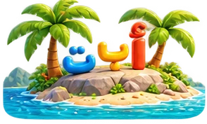
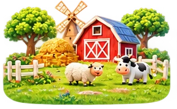
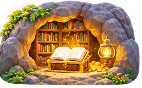
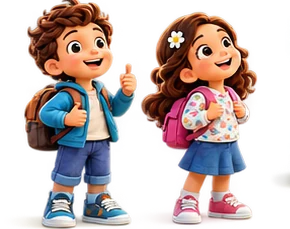
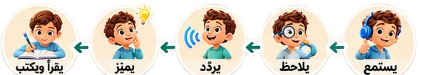

جزيرة الحروف
التعرّف إلى أصوات الحروف وربطها بالكلمات والصور، وكتابة الحرف منفردًا وفي أول الكلمة.
تعلُّم ممتع ومتكامل من خلال الصوت، والصورة، والممارسة.
رحلة تعليمية متكاملة، تنمو فيها مهارات القراءة والكتابة خطوة بخطوة.

التعرّف إلى أصوات الحروف وربطها بالكلمات والصور، وكتابة الحرف منفردًا وفي أول الكلمة.

تعلُّم الفتحة والضمة والكسرة والسكون، والاستماع إلى الفروق بينها ونطقها.
اكتشاف المدود بالألف والواو والياء والتمييز بين الصوت القصير والصوت الطويل.

قراءة كلمات وجمل بسيطة وفهمها، ثم التدرّج إلى كتابة جمل قصيرة.
تبدأ رحلة الطفل مع العربية حين يسمع الصوت، ويتعرّف إلى حرفه، ويربط الكلمة بصورة ومعنى. ومن هذه البداية، تتدرج السلسلة الصوتية للأطفال في تعليم القراءة والكتابة للناطقين بغير العربية من عمر ٥ إلى ٧ سنوات.
قد يفهم الطفل الكلمة حين يسمعها ويرى صورتها قبل أن يستطيع كتابتها كاملة؛ لذلك تتدرّج المهمة معه، ولا تتطلب منه الكتابة إلا بقدر ما يناسب مرحلته.

نسمع • نفهم • نقرأ • نكتبتجربة تعلم ثرية تجمع بين الكتاب، والقصة، والصوت، والحركة، والأنشطة.
* تُؤكَّد المواد المتاحة وروابط نماذجها قبل نشرها ضمن الحزم المعتمدة.
الهدف أن يفهم الطفل ما يسمعه، ويميّز الأصوات، ثم ينتقل إلى القراءة والكتابة بثقة.

يسمع الطفل الصوت والكلمات، ويتعرّف إلى الصور، ويردّد ويختار ما يطابق ما سمعه. ثم يتتبّع الحرف ويكتبه بقدر المطلوب في المستوى، ويشارك في نشاط يعيد إليه المهارة. ويمنحه كتاب التدريبات فرصًا إضافية للممارسة.
تتيح النماذج معرفة ما يسمعه الطفل ويشاهده، وما يُطلب منه أن يؤديه في كل نشاط.
عرض يجمع الصورة والصوت والحركة في تقديم عناصر الدرس.
الكلمات والمواقف في قصة قريبة من عالم الطفل.
استمع إلى طريقة تقديم الأصوات والكلمات للطفل.
نماذج من كتاب الطالب وكتاب التدريبات والأنشطة.
تساعد أنشطة الدروس والمراجعة على ملاحظة ما يستطيع الطفل فعله وما يحتاج فيه إلى مزيد من التدريب.
استمع مع طفلك، وردّدا الكلمات، وتحدّثا عن الصور، وشاركه قصة أو نشاط تلوين. دقائق منتظمة من الممارسة تدعم استرجاع ما تعلّمه.
استفسر عن المستوى المناسب ←ابدأ بهدف الدرس في كتاب الطالب، ثم اختر من التدريبات والصوتيات والقصة والفيديو ما يخدم الهدف، مع مراعاة قدرات الطفل في مستواه.
اسأل عن مواد الصف ←اطّلع على أهداف المستويات ونماذج الكتب والمواد المصاحبة، ثم استفسر عن المكونات المتاحة وخيارات الاقتناء المناسبة لبرنامجكم.
استفسر عن التوريد ←تساعده على ربط الحرف بصوته والكلمات التي يسمعها، ثم التدرّج في الحركات والمدود والقراءة والكتابة وفق مهاراته.
نعم. لا تفترض السلسلة أن فهم الكلمة يعني القدرة على كتابتها؛ يبدأ المطلوب الكتابي بالحرف، ويتسع تدريجيًا حتى الكلمات والجمل البسيطة.
يقدّم كتاب الطالب المحتوى والأنشطة الأساسية، ويمنح كتاب التدريبات فرصًا إضافية لتثبيت المهارة ومراجعتها.
تعود القصص والأنشطة إلى كلمات المستوى ومهاراته، وتتيح للطفل أن يلتقي بها في سياقات وصور جديدة.
تُستخدم لتقديم عنصر أو دعمه بالصورة والصوت والحركة، ثم يعود الطفل إلى المشاركة والترديد والقراءة والكتابة بحسب هدف الدرس.
انظر، بمساعدة المعلم، إلى قدرة الطفل على السماع والتمييز والقراءة والكتابة، ثم قارنها بأهداف المستويات.
تتضمن خطة السلسلة دليلًا لكل مستوى يوضح الأهداف وخطوات تقديم الأنشطة. وتُؤكَّد الأدلة المتاحة حاليًا عند التواصل.
للحصول على تفاصيل السلسلة والمستويات المتاحة والأسعار وخيارات التوريد، أخبرنا هل تسأل لطفلك أم لصفّك أم لمؤسستك.